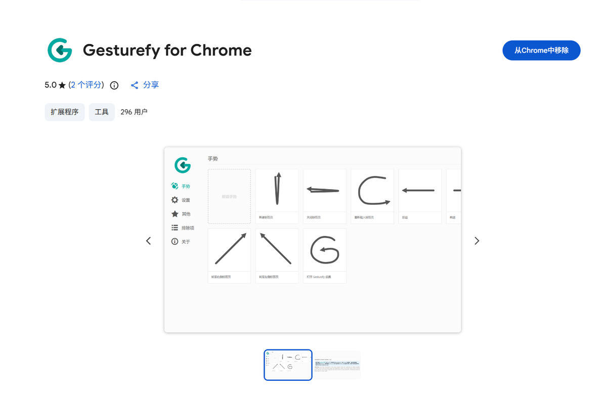
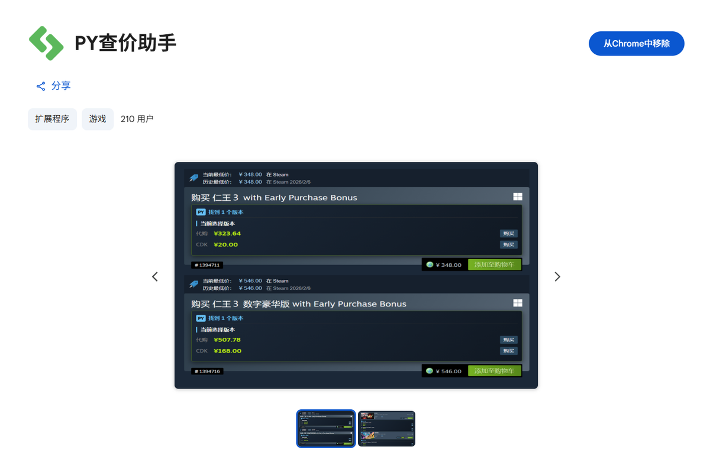

唐斌 · 作品集
AI 数据标注与质检 ｜ 浏览器扩展 / 桌面工具开发
2 年以上大模型训练数据的标注与质检经验，习惯把工作里的重复操作做成工具。
下面这些是我在工作之外独立完成的项目，都开源，且尽量附上可以自己点开验证的东西
（商店页面、可执行文件、源码、测试用例）。
3 个扩展已上架官方商店
Chrome 商店 2 个扩展累计 500+ 用户
24 个自动化测试用例
Python · JavaScript · BLE · WebExtensions
项目
01Gesturefy for Chrome · 鼠标手势扩展移植
已上架 Chrome 网上应用店
商店评分 5.0
296 位用户
GPL-3.0 · 保留原作者版权
原 Gesturefy 是 Firefox 独占的鼠标手势扩展。我把它移植到 Chrome 并成功上架：
按住鼠标左 / 中 / 右键划出手势即可执行命令，80+ 内置命令覆盖标签页、导航、滚动、
缩放、复制粘贴等。这是我用户量最大的作品，也是唯一"从读别人代码开始"的项目。
- 技术栈
- JavaScript、Rollup 打包、WebExtensions、Chrome Manifest 适配
- 我做了什么
-
读懂原项目规模不小的核心代码并完成 Chrome 侧适配；模块化改造——把新功能做成
独立的内容脚本模块挂载，冻结久经验证的核心引擎不重建，避免改坏已有逻辑；
手工录入微软 Edge 官方 16 手势映射供用户一键迁移；新增双击关闭标签页；
补齐简体 / 繁体中文界面与隐私政策页。
- 上架信息
-
版本 1.4.0，2026 年 8 月更新；3 种语言（English / 中文简体 / 中文繁體）；
安装包 282 KB；商店声明不收集任何数据（无服务器、无统计、无遥测）。
- 说明
-
这是移植 / 衍生作品（原作者 Robbendebiene，GPL-3.0），完整保留原始版权声明。
我负责 Chrome 适配与模块化改造，不冒认原创。

Chrome 网上应用店页面，以及扩展自身的手势设置界面
02PY查价助手 · Steam 比价扩展
已上架 Chrome 网上应用店
210 位用户
Manifest V3
在 Steam 商店详情页和愿望单上，直接显示第三方市场（SteamPy）的比价面板，
按版本（标准版 / 豪华版 / 终极版 / DLC）分行列出代购价与 CDKey 价，
方便判断"现在买还是等折扣"。
- 技术栈
- JavaScript、Manifest V3、Service Worker、Chrome Storage、防抖
- 我做了什么
-
Content Script 不直接发请求，统一委托 Background 代理，并在 Background 做
域名白名单校验（仅允许目标站点）；查询改为点击触发（按需请求）以规避风控；
适配 Steam 新版动态愿望单的超长列表，滚动不卡顿。
- 说明
- 基于 2024 年官方版本核心逻辑开发的第三方增强维护版，非官方发布。

Chrome 网上应用店页面，以及商店页内展示的实际比价面板
03网页 Steam 双开 · 多账号容器隔离
已上架 Firefox Add-ons
MPL-2.0
利用 Firefox 原生容器技术（Contextual Identities），为每个 Steam 账号建立物理隔离的
Cookie 环境，在一个浏览器窗口里同时登录多个账号，互不干扰。
- 技术栈
- JavaScript、WebExtensions、Contextual Identities API、browser.storage.local
- 我做了什么
-
整体功能设计与验收：零凭证接触（扩展绝不读取或保存账号密码）、本地 PIN 码锁定账号列表、
长文本备注（悬浮查看余额 / 密钥）、拖拽排序、对齐 Steam 客户端的暗色 UI。
所有数据仅存本地浏览器，不上传任何服务器。
- 说明
- 人机协作项目：我负责想法与功能设计，Google Gemini 负责具体代码生成。
04小米手环心率悬浮卡片
已发布免安装 exe
24 个测试用例全通过
Windows · GPL-3.0
把小米手环的实时心率投到 Windows 桌面悬浮卡片上：数字 + 心电图波形 + 设备昵称。
打恐怖游戏或健身游戏时开着，随时能看到自己心率。
- 技术栈
- Python、PyQt6、蓝牙 BLE（标准心率服务 0x180D / 特征 0x2A37）、PyInstaller
- 我做了什么
-
订阅心率 notify 通知、8 秒无数据自动重连；点击穿透让鼠标直达游戏；
透明度只作用于背景与描边（规避 Windows 判定全透明窗口"无可点击内容"的限制）；
拖动钳制屏幕内防止丢窗；多设备垂直堆叠；托盘图标 16px + 32px 双尺寸适配。
- 测试
- 24 个 pytest 用例覆盖配置迁移、心率区间与闪烁逻辑、多卡片布局、透明度像素级验证。
05Hermes 无痕模式 · AI Agent 会话不留痕
MIT 开源
多轮迭代审计
一个让 AI Agent 会话结束后不在本机留下任何痕迹的方案，采用四层纵深防御架构：
策略层封锁持久化写入、运行时护栏、框架层会话隔离、会话结束后反向审计与安全擦除。
- 技术栈
- Python、Shell、插件式日志过滤器、向量索引哨兵、安全擦除
- 我做了什么
-
写入全部限定在时间戳沙箱；shell 历史抑制；7 个缓存目录符号链接进沙箱（崩溃也安全）；
日志在内存层就已脱敏（明文不落盘）；向量库用哨兵文件细粒度跳过敏感会话；
会话结束后执行 10 步以上反向审计：残留检测 → 覆写 → fsync → 截断 → 删除。
- 说明
-
文档中显式列出"做不到的部分"（操作系统层 swap / core dump、网络层代理与 API 提供方日志、
第三方 IDE 监听）——边界写清楚，比假装全能安全。
开发方式
上面这些项目基本都是人机协作的产物：我负责提出需求、设计功能、判断方案边界、
用真实环境验证结果；代码由 AI 生成，我逐项审查并迭代修正。
我比较在意的几件事是：给 AI 看原始日志而不是描述症状、每个版本都自己在真实环境跑一遍、
做不到的能力诚实标注出来。这套方法我也整理成了文档。